Pycharm of Git guide
文章目录
由于 Hexo Github 的原因，我早就在本地安装了 Git。所以接下来只是讲解如何使用 Pycharm 中的 Git 进行本地代码的同步和步骤的迭代记录过程，如何使用好Git 这个工具其实也是一门必修课。
Part 0: 永久激活方法
需要注意该文章中的修改配置文件的前面都只需要添加一个杠。链接教程
Part 1: 环境配置
- Pycharm
- Github 账号
- Git
首先我们进入Pycharm Settings 里面配置好我们的 Github 账号：
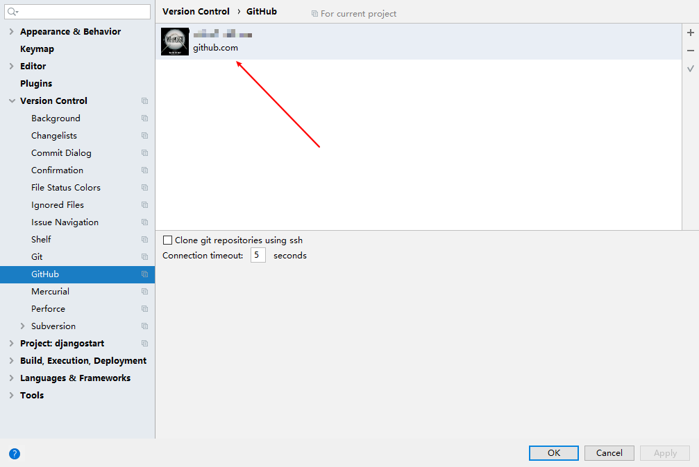
然后是配置 Git 本地运行文件的目录：
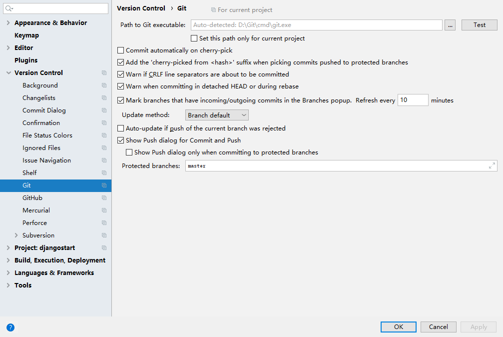
这样子我们就可以进行一个更新上传的操作了。对于一个项目如果我们并没有上传到云端的话，我们就需要新创建一个 Repository ，这个需要我们点击菜单栏的 VSC 选项
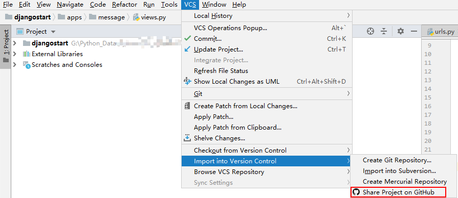
然后就会有一个弹窗：Share Project On Github ，填入New Repository name（仓库名，填入即可） 和 Remote Name（git用的远程仓库名，这个我暂时不知道有什么区别，但是我查看Branch时会发现后缀有区别。） 以及 Description（这个是简单的仓库的作用和方向描述。），按照要求填好之后就可以建立一个新的仓库，点击Share 按钮。
成功之后在 Pycharm 的右下角会有消息提示的。我们可以登录 Github 上查看自己的仓库，会有一个默认的分支为 master。
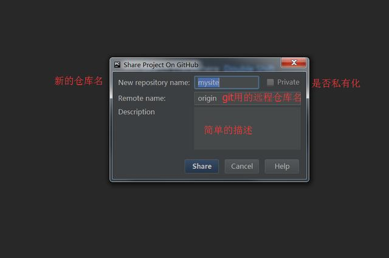
Part 2: 如何 Push 和 Clone
我们只要有更改的地方，上方的文件名便会进行修改为蓝色字体。我们选择 VSC-Git- Commite Files ，然后再选择 Push 即可进行上传，我们就可以在 Github 上看到更新的记录。
如果我们想要下载什么项目的话也可以直接在 Pychamr 中进行操作，选择 Git-Clone 将我们下载的链接复制粘贴进去，然后选择一个合适的文件夹位置即可。
Part 3: 如何新建 和 删除 Branch
查看上图，选择 VCS 下的 Git，可能Git不存在，那么你直接选择 VCS 下的第二项，然后会有一个弹窗下有下拉框，选择 Git 之后 Git 栏就会出现。下面是 Git 栏的属性：
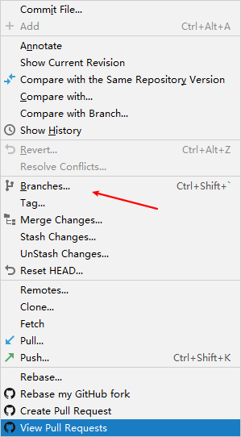
我们选择 Branches 即可查看当前该库的所有分支：
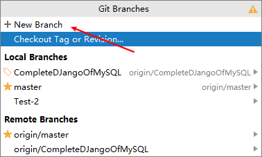
我们选择 New Branch 即可新建一个分支。我们还可以在原有的分支上点击最右侧的按钮进行检查更新和删除分支操作。
4.如何选择不同的 Branch 作为开发版本
选择左侧的文件夹，右击会出现 Git 选项-Repository-Rebase
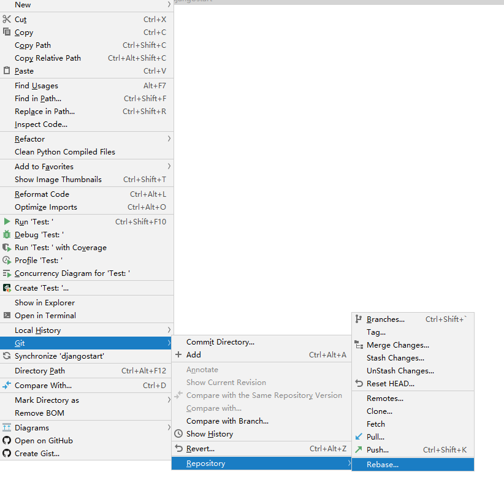
在后续的下拉菜单中可以进行选择，Rebase 之后我们的文件夹内的代码便会进行变化。然后我们即可进行开发了， 有更新和同步都只需要使用 Commit 和 Push 即可实现。
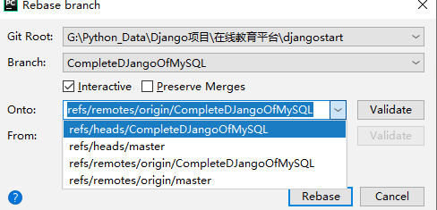
5. 如何将新更新的项目文件同步到新的 Branch 中
为什么会有这样子的问题呢？因为我之前看 追梦人物 的 Django 教程中使用的是 Github 的一个库的各个 Branch 来方便学习者根据不同的分支进行学习，每一个分支都代表了一个阶段。
那么如何去做呢？
我们只需要新建一个分支，然后在文件目录上点击 git
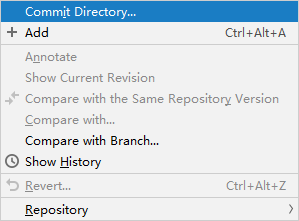
然后点击 Commit Directory 之后点击 VCS-git-push
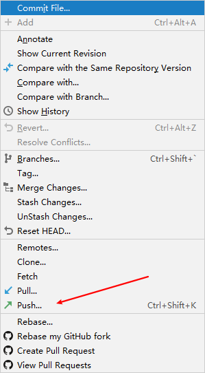
即可将当前版本的改动存放在新的 Branch 中。
6. 如何将Github项目下载到本地
关闭Pycharm(File-close project) 重新打开 Pycharm，然后选择如下图的位置 点击之后就会有一个 git,复制 Github上项目的下载位置，填写在弹出的对话框中，然后选择一个合适的存储地址即可进行Clone.
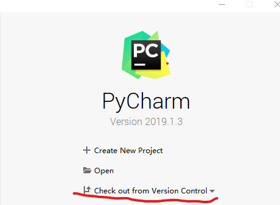
这里直接将之前的一个Github上有关爬虫的笔记库Clone在本地了，然后进行了测试，更新文件之后先Commit-Push即可实现笔记的更新。
7. 如何将Github的上的修改更新到本地
我们首先选择VCS之后选择创建一个库同步我们的代码之后，如果我们在Github上新建了一个MD导航文件之后，如何将其同步到我们的本地呢？选择VCS-Git-Pull 即可同步到本地代码
8. 如何修改Github仓库的可访问属性
打开仓库-Settings-Danger Zone-Make this repository public 输入该仓库的名字，然后验证即可。
9. 如何在pycharm中打开ipynb文件
之前的想法因为是打开的 Pycharm 2018版本的，所以和在 Chrome 打开的一样，后面发现是 Pycharm 2019 的版本就是如此。发现还行吧，操作起来就是下图的样式。
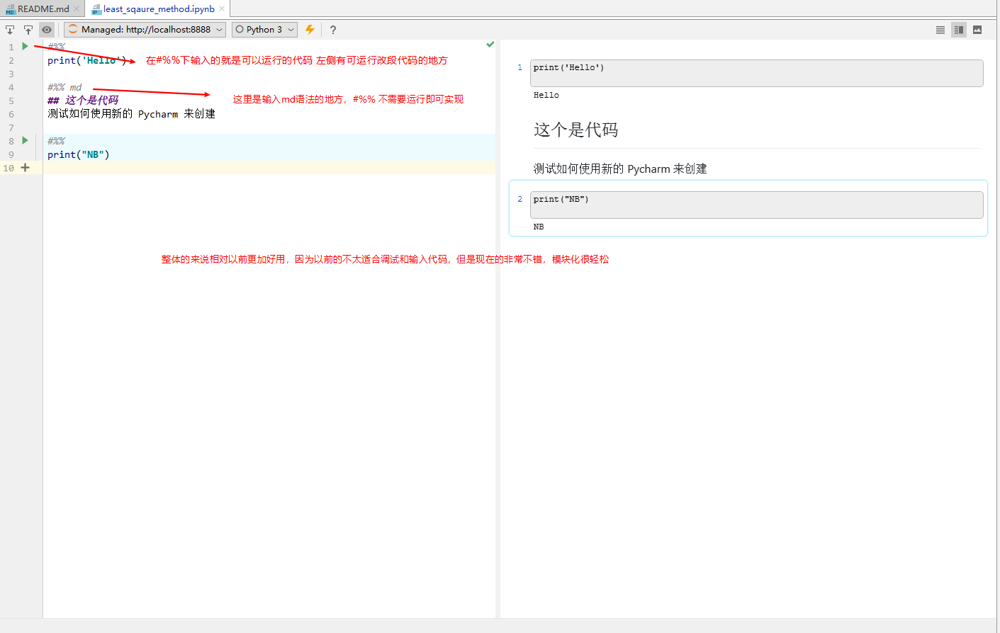
10. 如何卸载hexo 的插件
在 git bash 中输入如下的指令：
1 | npm uninstall hexo-jupyter-notebook |